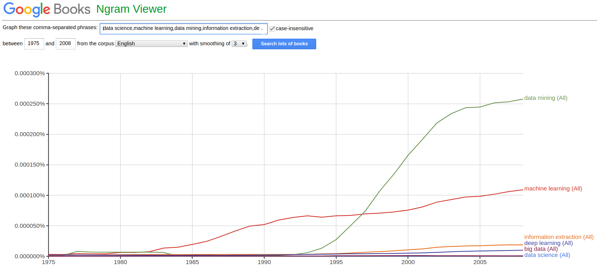
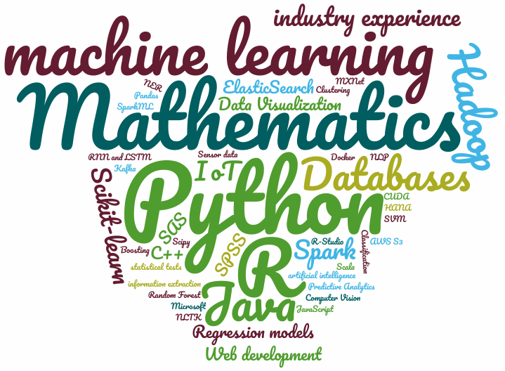
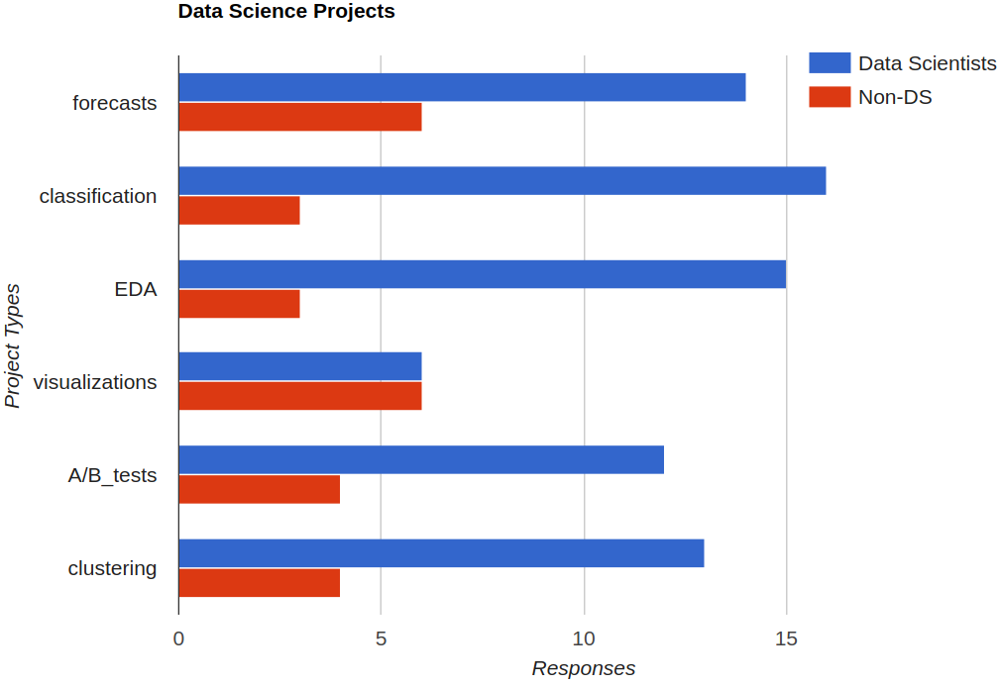
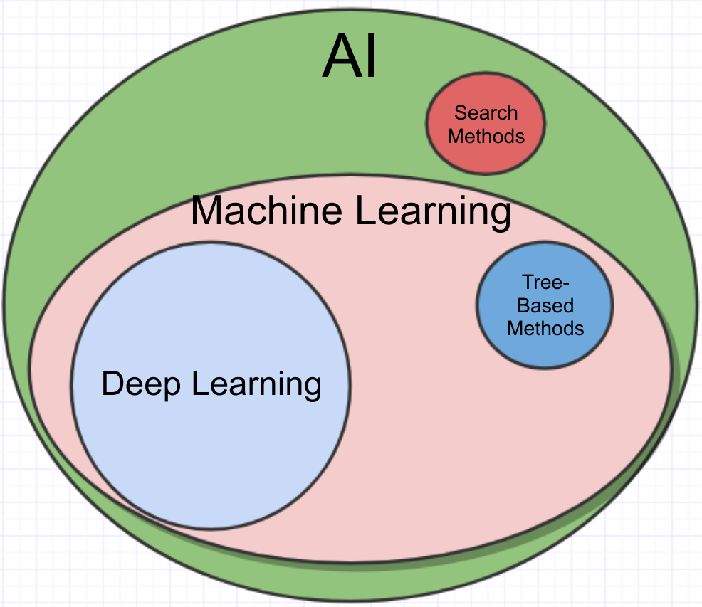

Data Science recently became popular. Currently, there are 154 open job positions on Indeed.com for Data Scientists in Munich. To put it into context: There are 186 Android developer positions open, 527 Dev Ops, 753 frontend, 812 backend. So it's still fairly small, but in the same ballpark.
I wanted to have a data-based answer to what a data scientist actually is and created a list of the skill set employers ask for, but it turns out that this would lead to a lengthy and hard to digest blog post.
I don't really like the term "data science" as it is too vague to me, but here is how I would define it: A data scientist is a person who applies data science. Data science is an academic field which deals with the extraction of knowledge and insights from data.
{kind=link}

I would also say it is a term used much more often in industry than in academia. The requirements between different job postings differ, but there are some general themes:
{kind=link}

Some of the requirements are typical senior software developer skills, such as knowledge in Scrum and Waterfall and good knowledge of spoken and written English and German. And some are rather special such as several skills around machine learning (sklearn, scipy, nltk, Theano / TensorFlow / Keras / MXNet) or Big Data (AWS, Hadoop, Spark).
I've also asked some friends and colleagues which kinds of tasks they have seen so far. I gave them a list of six possible responses and asked for more if there is something that didn't match an entry in the list. I didn't get any answer outside of it. Here are the answers:
{kind=link}

Let's first explain the different project types:
- Forecasts: Given a time series of the past, predict the future
- Classification (and regression): For example, detect if an e-mail is spam or not
- EDA: Exploratory Data Analysis. Here is the data - now find something interesting. This is a very unspecific task.
- Visualizations: Data Science can also be a bit about storytelling. You found something which can be explained with exact terminology and words, but it has to be made clear to stakeholders what you found in a simple, intuitive, fast way.
- A/B tests (and hypothesis testing)
- Clustering: Which types of customers do we have? (Customer segmentation)
Now, back to the bar chart: You can see that bar charts are much more visible / stick better in people's minds, although the other tasks are more common. And you can see that people tend to make too quick conclusions from seeing a pattern in small numbers 😉
From personal experience, I would say that forecasts, clustering and regression are relatively common tasks. Of course, one often has to start with exploratory data analysis.
I try to avoid clustering and pure EDA tasks as they are ill-defined. You can't say when you are done, which makes it hard to get satisfying results.
Data Science vs Business Analytics
Data science and business analytics are closely related. They certainly have big overlaps. Here are some differences:
| Business Intelligence | Data Science | |
|---|---|---|
| Tasks | Reports | Predictive models |
| Tool | QlikView, SAP | Pandas, sklearn, Jupyter notebooks, TensorFlow, Keras, XGBoost, scipy, numpy |
Data Scientist vs Data Engineer
Both data scientists and data engineers deal with data. While the engineer has more ETL-tasks (extract, transform, load), the scientist has more model creation and analysis tasks.
| Data Engineer | Data Scientist | |
|---|---|---|
| Typical Background | Computer Science + Software Engineering | Computer Science + Mathematics |
| Tasks | Collect and Transform Data (ETL), Data Warehousing | Generate Insights from Data; Machine Learning |
| Typical Frameworks | Hadoop, Spark, Cassandra, Apache Drill, CouchDB, talend, mongoDB, neo4j, MariaDB | Pandas, Numpy, Scipy, scikit-learn |
Data Scientist vs Data Analyst
Data Scientists and Data Analysts are pretty similar compared to Data Engineers. I would say that Data Scientists should also know about Machine Learning algorithms and Frameworks while I would not expect it from a Data Analyst.
Data Science vs ML vs AI
David Robinson made a really nice quote (source):
So in this post, I'm proposing an oversimplified definition of the difference between the three fields:
- Data science produces insights.
- Machine learning produces predictions.
- Artificial intelligence produces actions.
I usually say that ML is a strict subset of AI:

David Robinson's statement is not a contradiction to mine. I would say you need predictions about the future to take smart actions in a changing world.

See also
Now that it is clear what kinds of tasks are common in data science, I will continue with blog posts about how to make those projects successful.